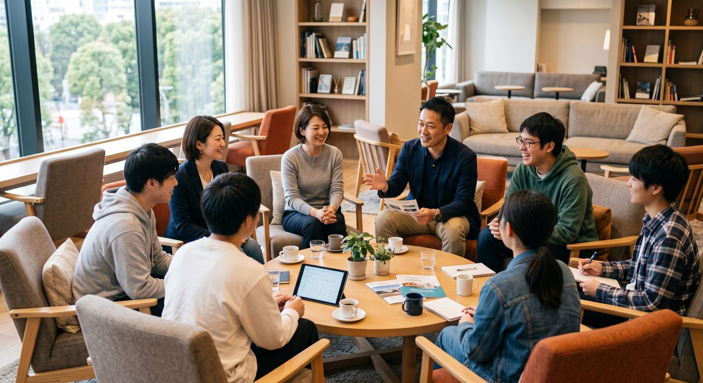

あなたにとってのOLIVE
立場が違えば、OLIVEの意味も違う。
参画をご検討いただくうえで、いちばん知りたいのは「うちにとって何なのか」だと思います。7つの立場ごとに、できること・得られることをまとめました。

自学だけでは開けない科目を、
開けるようになります。
OLIVEが「大学等連携推進法人」の認定を受けることで、単独の大学では使えない教学上の特例が使えるようになります。少子化に向き合いながら、教育の幅を狭めないための仕組みです。
- 連携開設科目他大学と共同で開設した科目を、自ら開設した科目とみなせます（学士課程は30単位まで）。
- 単位互換の実質化大学コンソーシアム岡山の枠組みを使い、教育リソースを相互に活用できます。
- 地域アクセス確保特例遠隔授業60単位上限などの設置基準の制約によらない取組が可能になります。
- PBLの運営負担を分散企業課題の発掘・調整・事務処理をOLIVEが担い、教員は教育に集中できます。
探究の伴走者が、
大学から来ます。
「総合的な探究の時間」を先生方だけで支えるのは大変です。大学教員と学生メンターが継続的に関わり、高校生が本物の研究や地域課題に触れられる体制をつくります。
- 大学教員・学生メンターの派遣N-E.X.T.ハイスクール改革先導拠点校、DXハイスクール選定校等へ継続的に派遣します。
- 大学授業の単位・AP認定高校生が大学の授業を受け、正規単位や先取り履修として認定される仕組みを整えます。
- STEAM教育リソースの共有県内の大学・高専がもつ実験機材や専門プログラムを、探究・STEAM教育の教材として拠点校へ届けます。
- 専門学科からの進学機会工業科等からの進学率の低さに向き合い、学科を問わず希望する進路を実現できる環境を整えます。
行政課題そのものが、
学びのテーマになります。
若者定着も、産業振興も、単独の施策では動きません。教育・産業・人口のデータを一つの基盤に集め、施策の判断材料として使える状態にします。
- 行政課題をPBLテーマに地域の実課題を大学生・高校生が扱い、解決策を社会実装まで持っていきます。
- 人材需給ギャップの可視化業種別・地域別の需給データを見られるダッシュボードを共通基盤として利用できます。
- 産業クラスター戦略との連動県・市町村の産業振興施策と、人材育成の設計を同じテーブルで議論できます。
- 県北・県西部のアクセス確保通学圏内に選択肢が乏しい地域へ、オンラインと拠点の組み合わせで学びを届けます。
採用と人材育成が、
ひとつながりになります。
自社の経営課題をPBLのテーマとして出せば、学生が半年かけて向き合います。その過程で、学生は御社を深く知ることになる。採用広報より確実な出会い方です。
- 自社課題をPBLのテーマにAI利活用・ロボティクス・フードテック等のWGで、実課題を題材にした共同プロジェクトを組成します。
- 超広域リクルート支援大都市圏で最終選考まで進んだ岡山ゆかりの学生へ、逆求人形式でスカウトできる仕組みを開発中です。
- 社員のリスキリング経営層向けから現場向けまで、階層別のプログラムを県内大学と連携して提供します。
- 学内デジタルサイネージ広告岡山大学ピーチユニオンに100インチを設置済。学生の生活動線上で自社を知ってもらえます。
取引先の人材課題に、
解決策を持って行けます。
「人が採れない」「DXを担う人材がいない」は、地域金融機関が最も多く聞く相談のひとつです。OLIVEは、その相談に対して具体的なプログラムを紹介できる先になります。
- 取引先へのソリューション提供リスキリング講座、PBL、採用支援を、取引先支援メニューとして紹介できます。
- 経営人材の派遣事務局の経営管理を担う専門人材の派遣を通じ、地域人材育成の中核に関与いただけます。
- 地域経済データへのアクセス人材需給・産業構造の分析基盤を、融資判断や地域分析の材料として活用できます。
- 将来のファンド組成PBL発の新規事業や学生起業を支える、地域イノベーション創出ファンドの組成も視野に入れています。
「岡山も面白い」を、
事実として伝えられます。
若者が出ていく理由の一つは、地元に何があるか知られていないことです。挑戦している学生と企業の現場が、継続的に取材できる素材として立ち上がります。
- 継続的な取材素材年間数十件のPBL、学生の挑戦、企業の変革が、常に現在進行形で走っています。
- 広報戦略部会への参画学生・企業・保護者それぞれに届く発信を、部会として一緒に設計します。
- 学生メディアとの協働大学横断の学生広報サークルOTD等と連携し、等身大のコンテンツを共同制作します。
- 保護者世代への発信大都市圏志向の保護者に対し、地元で高いキャリアを築ける事実を届けます。
支援される側ではなく、
つくる側にいてください。
OLIVEには「ユースボード」という学生だけの常設組織があります。意見を聞かれるだけの場ではなく、プログラムの設計に加わり、産学官金言のトップに直接提言する立場です。
- プログラム設計に参加PBLや起業家教育の企画段階から加わり、「本当に学生に届くか」を検証します。
- トップへのリバースメンタリング2040年に社会の中核になる世代として、経営者や学長に直接提言します。
- 実企業の課題に挑む製造業の自動化、フードテック、看護DXなど、本物の課題にプロトタイプまで取り組めます。
- 高校生のメンターになる研修を受けたうえで高校の探究活動に伴走し、自分の経験を次の世代へ渡せます。
共通して得られるもの
一機関では持てない規模のデータ・人材・信用力を、分かち合う。
立場を問わず、参画機関に共通して開かれる6つのリソースです。
カリキュラムの相互活用
連携開設科目の共同設置・単位互換により、自機関だけでは提供できない学びを学生に届けられます。
PBLへの優先参加
補助事業で実施する各種の課題解決型プロジェクトに、優先的に参加・テーマ提供ができます。
高校・地域との新規接点
学生メンター派遣等を通じて、これまで接点のなかった学校や地域とのつながりが生まれます。
共通データ基盤
人材需給ギャップダッシュボードなど、単独では構築できない分析基盤にアクセスできます。
活動拠点の利用
岡山大学津島キャンパス内に設置予定のOLIVE活動拠点を、共同利用できます。
リクルートサービス連携
採用直結型の各種サービスと連携し、人材の獲得・定着の実務に直接つなげられます。